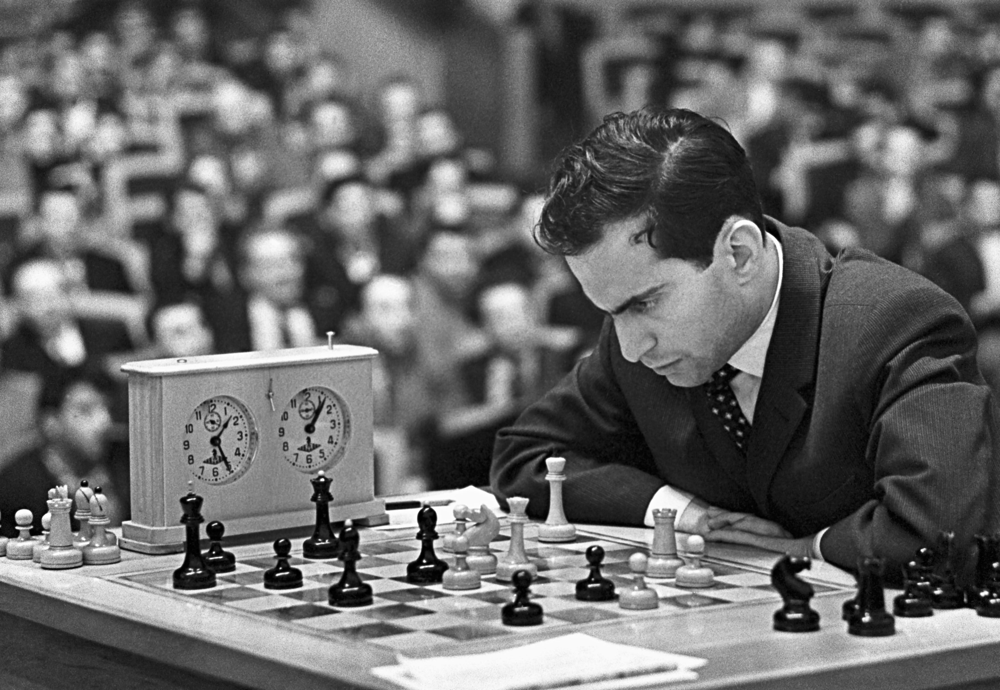

Michail Tal è stato l'ottavo campione del mondo di scacchi, dal 1960 al 1961.
Ancora oggi è celebrato per il suo stile di gioco unico, caratterizzato da frequenti sacrifici di materiale. Sono rimasti nella storia i suoi sacrifici di regina, come quello contro il Grande Maestro Jon Kristinsson nel 1964.